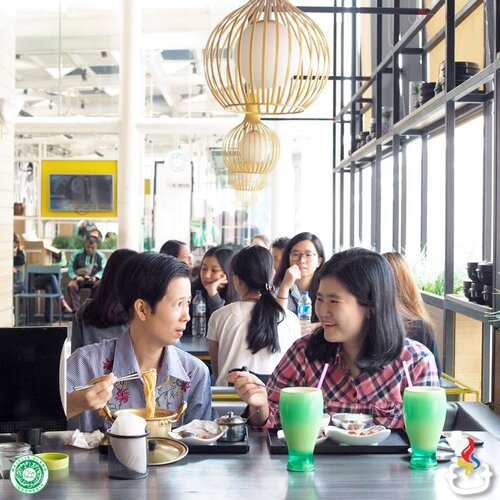
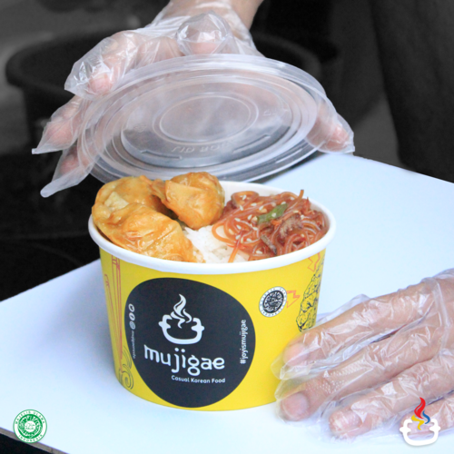

|  |  |
Dine-in Resto |
Mujigae Korean Delivery |
Nikmati momen spesial bersama orang tersayangmu dengan menu favorit di Mujigae. Lokasi yang nyaman dan suasana yang asik sangat cocok untuk dikunjungi bersama keluarga. |
Kini Mujigae hadir di aplikasi pengantaran makanan favoritmu! Kamu bisa pesan menu-menu favorit melalui GoFood, AirAsia Food, GrabFood, ShopeeFood, dan Pembelian Langsung (Takeaway). |
- Lokasi Dine-in Resto - |
|
BANDUNG |
Cihampelas Walk, Young Street |
BEKASI |
Summarecon Mall Bekasi, Lobby Oval, GF |
TANGERANG |
Summarecon Mall Serpong 2, Down Town Area |
- Lokasi Mujigae Korean Delivery - |
|
JAKARTA
|
BOGOR
|
DEPOK
|
TANGERANG
|
BANDUNG
|
BEKASI
|